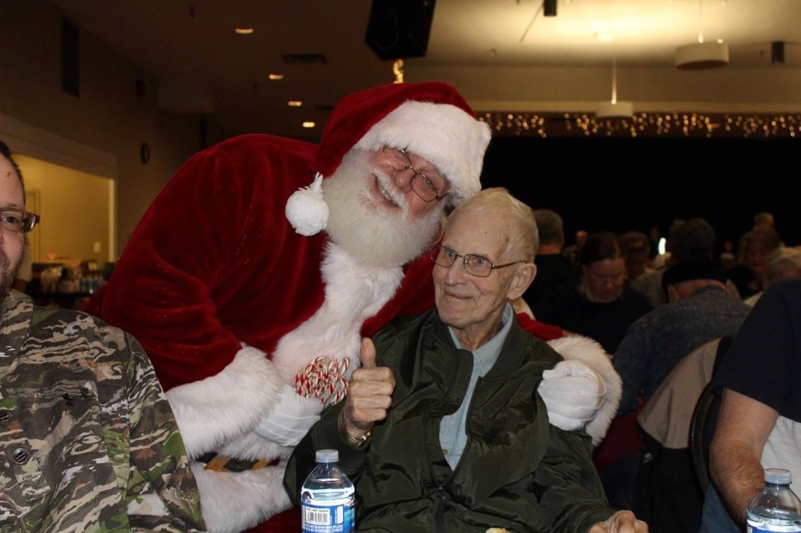

About Earl Naswell
January 21, 1931 – October 6, 2020
Earl Naswell was born in Minnedosa, Manitoba, to John and Mary Naswell. A devoted father of seven children, grandfather of fourteen, and great-grandfather of thirteen, Earl was a kind and hardworking man who made an extraordinary impact on the Comox Valley community.
In 1982, Earl began what would become one of Vancouver Island’s most cherished traditions: the Earl Naswell Community Christmas Dinner. What started as a simple act of kindness for a few friends grew into a community-wide event that now serves over 500 people annually. Earl’s passion and humility inspired countless volunteers and donors to come together every Christmas Day to ensure no one went without a hot meal or holiday companionship.
Although Earl passed away in 2020, his spirit of generosity lives on through the annual dinner and the countless lives he touched. His legacy continues to be a beacon of hope, service, and community for all who knew him and those who continue to benefit from his vision.
Earl Naswell at a past Christmas Dinner
Make a Donation
Your support keeps Earl’s vision alive. Every dollar goes directly to food, supplies, and logistics.
Donate via Interac e-Transfer to: earlnaswellchristmassociety@gmail.com
Funds are auto-deposited to Coastal Community Credit Union.
Download Donation Form (PDF)Volunteer With Us
Join over 100 dedicated volunteers. Whether in the kitchen, delivering meals, or just setting up tables — we’d love your help.
Email: earlnaswellchristmassociety@gmail.com